The Cluny Forum is the initiative fostering the French-German relationships via the get-to-together and reflection of French-German young business talents from French/German companies and institutions.
After 2 successful forums in Cluny in 2013 and in Berlin in 2015 gathering more than 50 participants, Cluny’16 will meet this year in the city of Lyon from 7th to 9th October to exchange, create and work on inspiring ideas and action plans dedicated to the topic “Digitalization and Youth”.
During two days you will work on digital subtopics, e.g. Education 4.0, Industry 4.0, Start-ups etc., in small groups – working language English. Guided by open debate professionals and the organization team, you will have the chance to present your sparkling digital ideas in front of senior business leaders from the corporate sponsors of Cluny’16 and receive their feedbacks. Of course other surprises are planned for you to have an enriching Cluny’16 journey in Lyon with experience sharing, networking time and more.
It will be also the opportunity to reflect on the achieved actions from the last Cluny Forum and launch new projects to be voluntarily continued after Cluny’16.
.png)
Mobile.png)
WhenFriday 7th October 2016:
|
WhereHotel & Cluny'16 Reception Addresses:
|
Transport Tips- Lyon Part Dieu Station to NOVOTEL Lyon Gerland: Metro B - direction Stade de Gerland - STOP at Debourg and Tram T1 - direction IUT Feyssine - STOP at Musée des Confluences (1,8€)
|
|---|
.png)
Mobile.png)
Friday 7th OctoberOfficial Opening & Getting to KnowFrom 12.00 pm until 19.00 Arrival, check-in in hotel & free-time Hotel: NOVOTEL Gerland 70 avenue Leclerc 69007 Lyon 19.00 pm - SHARP Departure to Cluny'16 Reception Room Car Shuttle from NOVOTEL Reception: ESMOD 12, rue bis Burdeau 69001 Lyon 19.30 om - SHARP Cluny'16 Opening Ceremony Digitalization, Youth & French-German Friendship -Wilkommen/Bienvenue Words TUFA Founding Fathers and Cluny'16 Organization Team -Special Speeches Guests of Honor Béatrice Angrand, General Secretary, French-German Office for the Youth - Paris Philippe Coq, General Secretary of Public Affairs, Airbus Group - Paris Volker Pyrtek, Chief Executive Officer, BuyIn The Procurement Alliance - Bonn/Paris Dominic Schwickert, General Director, Das Progressive Zentrum - Berlin Valérie Thérond, General Director, Orange Centre Est - Lyon 20.45 pm - Diner & Digital Quiz Cocktail Getting together & digital quiz in teams announced on spot during the cocktail 23.pm - Departure to NOVOTEL Car shuttle from ESMOD |
Saturday 8th OctoberWorking Groups, Brainstorming & DiscoveryFrom 7.00 am Your Breakfast in hotel NOVOTEL 8.30 am Hotel - ESMOD Ride Departure to Cluny'16 reception room Bus shuttle from NOVOTEL Reception: ESMOD 12 bis, rue Burdeau 69001 Lyon 9.00 am - SHARP Cluny Forum Project Story since Berlin 2015 9.45 am - Cluny'16 Workshops - Let's reflect ideas 11.45 am - Digital Stakes in Perspective - Special Guests - Digital Transformation in the Industry, General Electric Vincent Champain, Operation Director France, General Electric - Paris - One Decade of CyberCrime, Stormshield Julien Paffumi, Product Marketing Manager, Stormshield - Lyon - tbc, Orange 13.00 pm - "Bouchon Lunch" Café des Fédérations - 9 rue Major Martin - 69001 Lyon 14.30 pm - Cluny'16 Workshops - Let's shape your action plan 18.00pm - Free Time 18.15 pm - Hunting Walk Cluny'16 & Lyon Treasuries Place of Departure: ESMOD Dinner Made in Lyon Gastronomy Restaurant: Leon de Lyon - 1, rue Pleney - 69001 Lyon 23.00 pm - Bus Shuttle from Restaurant to NOVOTEL |
Sunday 9th OctoberWorking Groups, Results & ClosingFrom 7.00 am Your breakfast in Hotel NOVOTEL 8.15 am - Check-Out Hotel 8.40 am - Bus Shuttle from NOVOTEL to ESMOD with luggage 9.00 am - Cluny'16 Workshops Let's finalize your result presentations 10.30 am - Cluny'16 - Let's do your result show Presentation/Exchange in front of/with our surprise jury of top management leaders (Revealed only on the day itself) Closing 12.15 pm Bus Shuttle with luggage 12.45 pm - Lunch Last Cluny'16 Surprise for Networking & Closing 15.00 pm - Departure to Rail Station/Airport Easy access to public transport with luggage |
|---|
.png)
Mobile.png)
1. Digital media and the reshaping of civic engagementSince few years, we have witnessed how social media can be used to build political campaigns and bring people together to push for change: Obama campaign in 2008, “Occupy Wall Street” movement and the Arab Spring all come to mind. How do young people use digital media? Can these tools change their commitment to political and social causes? On the opposite, is there any risk that digital media reduce their civic and political engagement? Is it possible to leverage on social media to give birth to a “digital democracy” with a strong commitment of the youth? What can be a Franco-German perspective? |
2. French-German digital cooperation and competitivenessDigitalization deeply transforms both economies and firms, even old industries since digital services are likely to turn many activities upside down. Despite several cooperative dynamics between France and Germany, there is nothing with regard to digital transformation. What kinds of cooperation can support the digital transition on both sides of the Rhine? How to create opportunities of intercompany dialogue and projects? What is missing for working together and favor a mobility of young professionals, back and forth, that helps share good practices and promote joint projects that mutually reinforce competitiveness? |
3. The digital transformation of education and employabilityHow can people acquire skills and competencies today? It appears that a passive mode of education centered on initial training is no longer satisfactory to match the requirements of job market. Do young people still need to wait for the second half of their twenties and to accumulate several diplomas to join the job market? What would characterize training and learning in a digital world? How can the education/training model be transformed by digitalization, eventually throughout professional career, in France and Germany? How to validate competencies and involve HR depts. to support such validation? |
4. Boosting innovation through digitalizationCan an in-depth transformation of the industry thanks to digitalization open opportunities to develop new industrial sectors in France and Germany? Is a “digital transition” the sine qua non condition to preserve industrial activities in Europe? How to promote new ways of innovating to develop and deliver tomorrow’s products and related services? What are the best rules to benefit from free open innovation and securing the benefits of inventors? As a digital world helps create many interactions between knowledge owners, do we need to get rid of today’s system of intellectual property rights (IPRs)? |
5. A job market without human resources intermediariesA digitalized job market can favor people’s access to job opportunities and thus reduce unemployment. Can companies leverage on digital tools to improve the relationship with employees and unemployed? Does it still make sense to maintain HR departments in today’s digitalized business world where one-to-one interactions are possible? Does such transformation benefit to employees or can it be detrimental? Can social media preserve a sufficient “Chinese Wall” between professional applications and personal ones, notably with regard to the tradition of employees-employers relations in France and Germany? |
6. The digital customer as the driver of marketsDigital media open new and innovative opportunities to liaise producers and users. Can digitalization turn upside down the relationship between companies and their customers? Is it likely that companies’ traditional role in designing products and services disappears? Will digitalization promote a true empowerment of end-users in the value chain? What can be the contribution of young generations to contribute to such transition of companies in the digitalized economy, notably in Germany and France? Are companies able to develop an effective use of social media in their producer-user strategy? |
7. Digitalization as the last frontier of culture?Internet revolution has already favored the blossoming of new means and ways to stimulate cultural activities. Can digitalization push the frontier of cultural creativity? Can we consider digital world as a new, exciting frontier opening new territories, particularly in France and Germany? Is it necessary to radically change the system of intellectual property rights? How to find the right balance between the freedom of creators and an economically-sound digitalization? Can the culture leverage on the best practices in France and Germany to promote a «European way» of digital-fostered culture? |
|---|